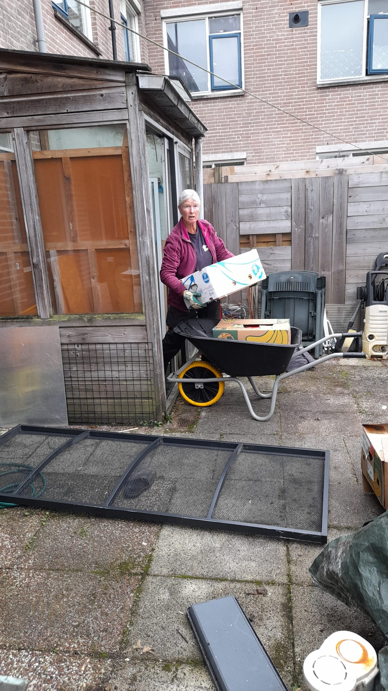
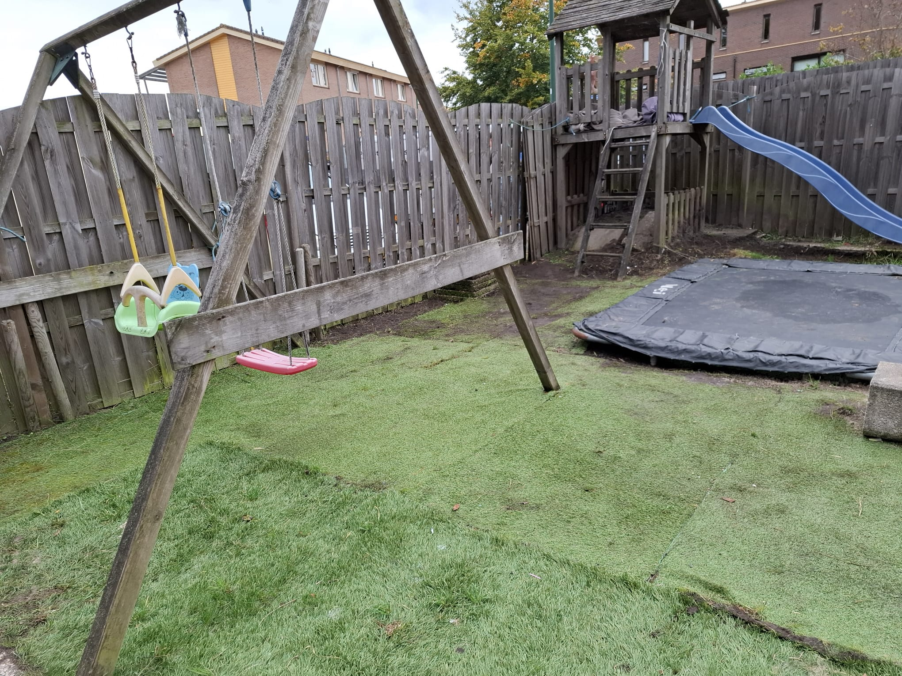
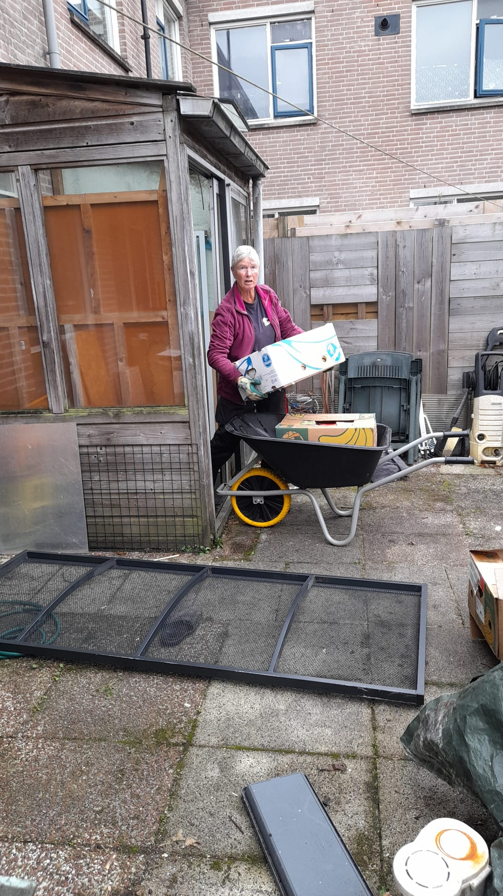
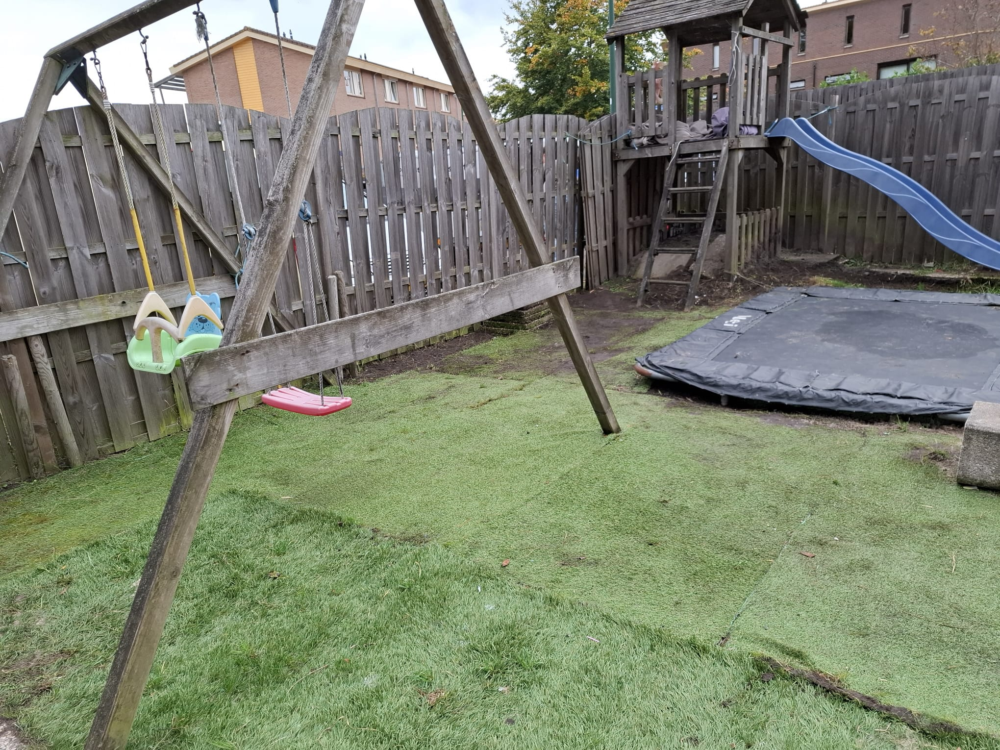

Zaterdag 11 april 2026
Samen doen voor Soest
De Soester Diaconale DoeDag
Op de DoeDag zetten zo'n 50 vrijwilligers zich in om mede-Soesters te helpen met praktische klussen, tuinwerk en sociale activiteiten. Doe je ook mee?
De Soester Diaconale DoeDag
Op de DoeDag zetten zo'n 50 vrijwilligers zich in om mede-Soesters te helpen met praktische klussen, tuinwerk en sociale activiteiten. Doe je ook mee?
Vrijwilligers helpen mede-Soesters met uiteenlopende projecten
Van licht snoeiwerk en schoffelen tot het verwijderen van struiken en het aanleggen van hekwerk. We maken verwaarloosde tuinen weer mooi.
Kamers verven, kleine reparaties, lampen ophangen of opruimwerk. Met een paar paar handen maak je een groot verschil in iemands woning.
Gezelligheid en aandacht brengen aan mensen die dit minder vaak ervaren. Denk aan samen koken, wandelen, spelletjes of een uitje.
In vier simpele stappen ben je erbij
Vul het aanmeldformulier in en geef je voorkeuren op. Alleen of als groep.
Present Soest stelt teams samen van 3 tot 5 vrijwilligers per project.
Een week voor de DoeDag hoor je met wie je aan de slag gaat en waar.
Op de DoeDag zelf ga je samen aan het werk. Eind van de dag sluiten we gezamenlijk af.
Een kleine greep uit wat we samen bereiken
 


